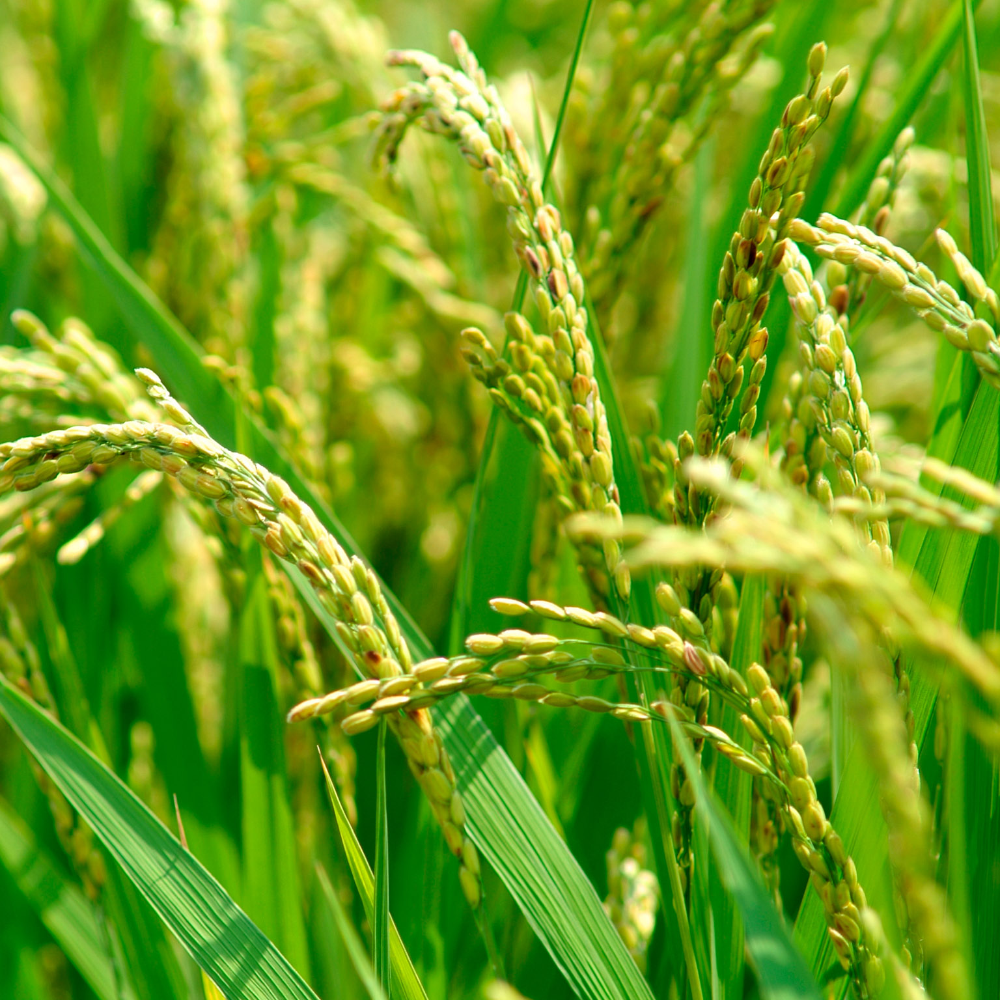

Start with the
soil beneath you.
Enter your field measurements to discover a crop recommendation powered by our trained machine learning model.
A crop to explore.

Your crop will appear here
Your recommendation is based on your field measurements.
RANDOM FOREST MODEL
--%
Model confidence score
This represents the model's estimated probability for its recommended crop, not a guarantee of harvest success.
Top 3 crop matches
Measurements analyzed
Nitrogen
--
Phosphorus
--
Potassium
--
Temperature
--
Humidity
--
Soil pH
--
Rainfall
--
This recommendation is generated by a machine learning model. Consider local agricultural conditions before making planting decisions.